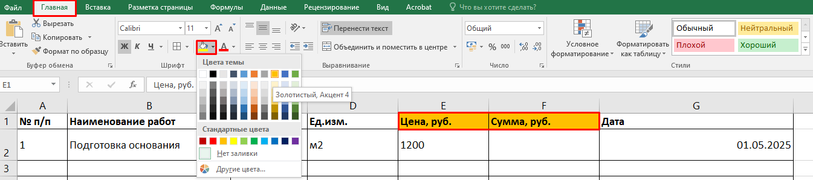

Шрифты и границы

Андрей, на предыдущем уроке мы научились сохранять файлы в разных форматах и подготовили наши документы для отправки заказчику или коллегам. Теперь давай сделаем наши таблицы не только функциональными, но и красивыми! В этом уроке мы разберем основы оформления: шрифты, границы и заливка. Это важно, потому что хорошо оформленная таблица — это не только эстетика, но и удобство восприятия информации. Ты научишься выделять важные данные, оформлять заголовки, а также правильно применять границы для улучшения визуального восприятия таблиц.
Шрифты и их настройки
Шрифты в Excel позволяют сделать таблицу более читаемой и структурированной.
Вот что нужно знать:

Выбор шрифта: Используй стандартные шрифты, такие как «Calibri» или «Arial», так как они хорошо видны и подходят для документов.
Размер шрифта: Для заголовков обычно выбирают размер от 12 до 14, а для обычного текста — от 10 до 12.
Жирный, курсив, подчеркивание: Они помогают выделить важную информацию. Например, заголовки часто делают жирными, а суммы или итоги — подчеркивают.
Пример
Чтобы выделить название столбца, сделай его жирным.
Границы ячеек
Границы помогают сделать таблицу более структурированной. В Excel можно добавлять границы по всему диапазону или только вокруг отдельных ячеек.

Как это сделать:
- Выдели нужные ячейки.
- Перейди на вкладку «Главная» и выбери «Границы».
- Выбери тип границы — например, «Все границы», чтобы обвести всю таблицу.
Границы лучше использовать для важных частей таблицы, а не для каждой ячейки.
Заливка ячеек
Заливка позволяет выделить ячейки цветом. Это полезно для акцентов, например, для подсветки важных данных или разбиения строк таблицы.

Как залить ячейку:
- Выдели нужные ячейки.
- На вкладке «Главная» нажми на «Цвет заливки».
- Выбери нужный цвет.

Не перегружай таблицу цветами, используй заливку для выделения ключевых позиций.
Практическая часть
Теперь давай применим все эти фишки на практике и оформим таблицу материалов для строительного проекта.
- Открой новую таблицу или используй таблицу, которую мы создали ранее для сметы.
- В ячейке A1 введи заголовок «Смета материалов», сделай его жирным и увеличь размер шрифта до 14.
- Для заголовков столбцов (например, «"№ п/п", "Наименование работ", "Цена») сделай шрифт жирным и увеличь размер до 12.
- Примени границы: выдели все ячейки с данными и добавь «все границы». Это поможет четко разделить данные.
- Залей ячейки с суммами (столбец F) светло-зеленым цветом, чтобы они выделялись.
- Добавь заливку в заголовок (например, цвет фона — светло-синий) для улучшения видимости.
Применяя заливку, не переборщи с цветами. Лучше ограничься тремя-четырьмя цветами для четкости и гармонии.
Ты отлично справился с оформлением таблиц! Теперь твои документы выглядят не только профессионально, но и удобно для восприятия. На следующем уроке мы изучим условное форматирование. Это позволит тебе автоматически выделять важные данные в таблице, например, дефицитные материалы или просроченные задачи. Так что давай не откладывать, а переходить к следующему уроку! Естественно, после интерактивного тренажера :)
Встроенный материал: Flipcard — открыть сохранённое содержание
Границы ячеек в Excel используют для выделения всей таблицы
- Правда
- Ложь
Пояснение источника: Границы ячеек в Excel используют для структурирования данных и выделения частей таблицы

Чтобы выделить строку заголовков таблицы, необходимо применить заливку и сделать шрифт жирным и увеличить размер
- Правда
- Ложь
Пояснение источника: Чтобы выделить строку заголовков таблицы, необходимо применить заливку и сделать шрифт жирным

Для таблицы лучше использовать шрифт Calibri
- Правда
- Ложь
Пояснение источника: Для таблицы лучше использовать шрифт Calibri